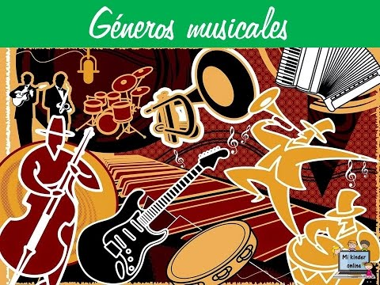

Pop
Surgió en EE.UU. (años 50) combinando rock y otros estilos. Características:
- Estructuras simples y pegadizas
- Fusión con cumbia, reggae y trap
- Domina listas de ventas globales
Explora la diversidad de estilos que definen la música moderna
Los géneros musicales son clasificaciones que distinguen las diversas expresiones según el uso de sus instrumentos, tendencias estéticas o contenido histórico. Entre los más populares hoy destacan:
Surgió en EE.UU. (años 50) combinando rock y otros estilos. Características:
Raíces afroamericanas con estructura de 12 compases:
Nació en comunidades neoyorquinas (años 70):
Evolución del rock 'n' roll (años 60):
Revolución digital (años 60 en adelante):